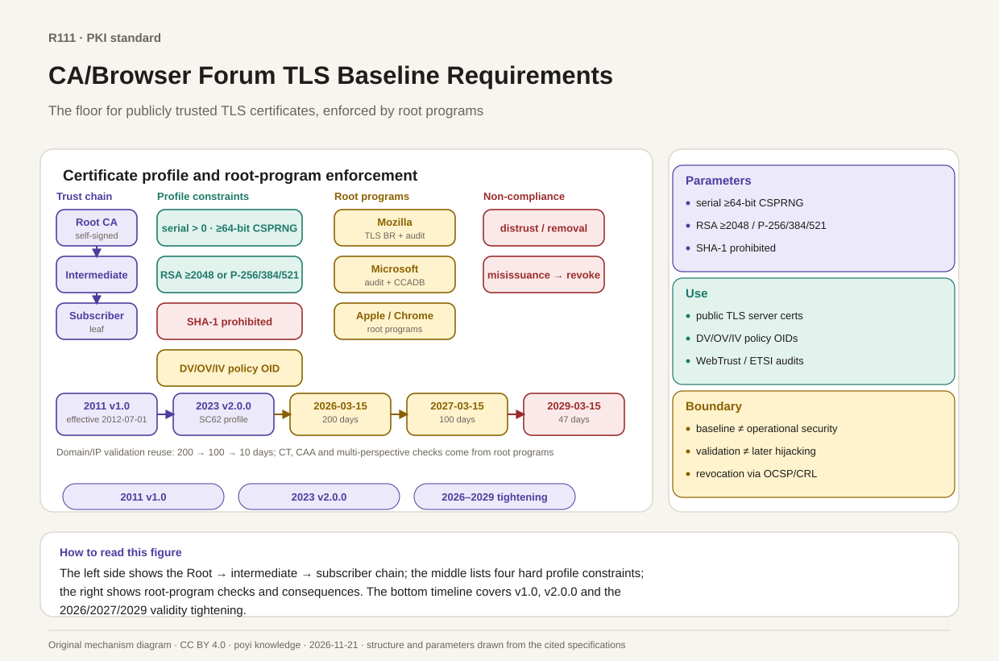
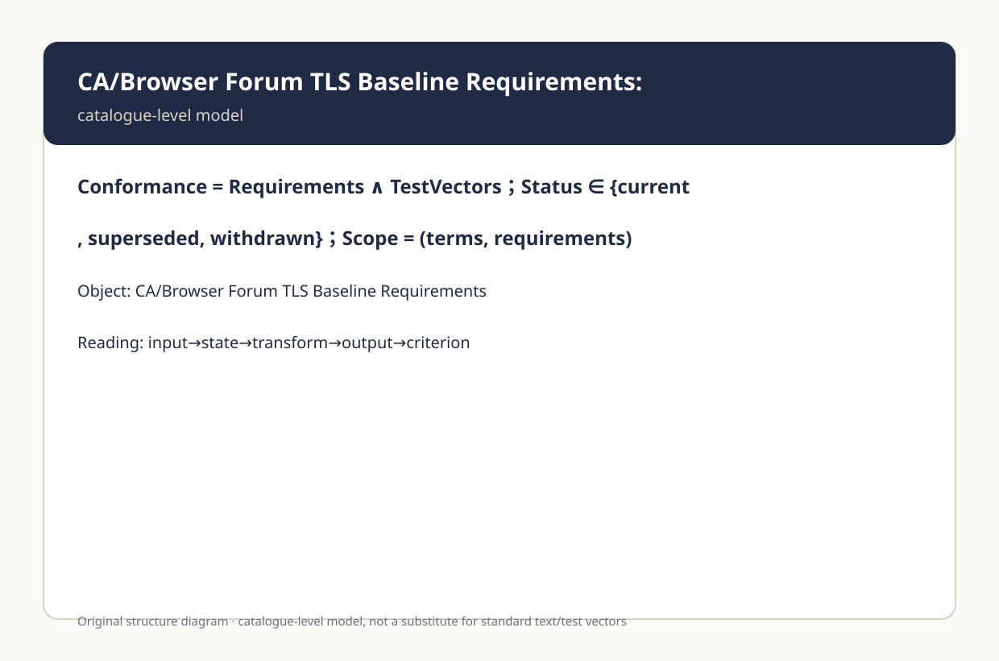

Principles
Standard: CA/Browser Forum TLS Baseline Requirements (CA/Browser Forum TLS 基线要求). ### A baseline CP, not browser code
The CA/Browser Forum is a voluntary organization of CAs and browser/software suppliers. The TLS Baseline Requirements use the RFC 3647 framework to state minimum requirements for publicly trusted TLS server certificates: identity proofing, domain/IP control validation, certificate profiles, validity, audits, revocation and incident response. They are not automatically mandatory; they bind only after a root program adopts and enforces them. ### Hard constraints in the certificate profile
BR Section 7 defines certificate content: serial numbers must be greater than zero and contain at least 64 bits of CSPRNG output; RSA keys must be at least 2048 bits, or use P-256/P-384/P-521; SHA-1 is prohibited; end-entity certificates must carry a CA/B reserved policy OID (DV 2.23.140.1.2.1, OV 2.23.140.1.2.2, IV 2.23.140.1.2.3). These fields let relying parties identify the certificate type and policy.

Why it matters
Before 2011, CAs differed in validation, validity, fields and audit scope, producing misissuance and inconsistent browser trust. A common baseline lets root programs evaluate every CA against the same audit evidence and gives relying parties a predictable minimum security line.
A baseline is a minimum, not a complete security proof; CA compromise, validation bugs and domain hijacking still happen. Root programs add their own requirements such as CT, CAA, multi-perspective validation and revocation SLAs.
Applications
v1.0 was adopted on 2011-11-22 and became effective on 2012-07-01; v2.0.0 (the SC62 certificate-profile rewrite) was adopted on 2023-04-22 and effective on 2023-09-15. The current 2.3.1 (2026-10-04) schedules compliance dates through 2029: from 2026-03-15 subscriber certificates may live at most 200 days, from 2027-03-15 at most 100 days, and from 2029-03-15 at most 47 days; domain/IP validation data reuse shrinks from 200 days to 100 and then 10 days.
Mozilla, Microsoft, Apple and Chrome root programs require CAs to meet the TLS BR and pass WebTrust/ETSI audits; serious violations can lead to distrust or removal. Microsoft's root program also requires DV/OV/EV/IV policy OIDs, annual audits and CCADB disclosure.

Limits & attacks
The BR governs certificate issuance and profiles, not a CA's internal network, HSMs and staff; those are covered by the Network and Certificate System Security Requirements and root-program rules. A leaked CA private key or misissuance can still enable interception.
Domain control validation proves control at application time, not against later hijacking; reuse periods and CAA reduce but do not eliminate the risk. Revocation depends on relying parties checking OCSP/CRL, and soft-fail and delay remain practical problems.
Shorter validity, key scopes and CT mandates raise operational cost for CAs and customers; small CAs or private PKIs can be marginalized. The BR is a multi-party voted product, not a cryptographically optimal design.
History
The CA/Browser Forum formed in the mid-2000s from CAs and browser vendors. v1.0 was adopted on 2011-11-22 and took effect on 2012-07-01; SC62 rewrote the certificate profiles as v2.0.0 in 2023, effective 2023-09-15. The 2026 version 2.3.1 continues to shorten validity and validation reuse.
“Baseline” does not mean “low standard”; it is the floor every publicly trusted TLS certificate must meet. The EV Guidelines add a higher identity-proofing layer on top.
Worked example & verification
Formal model and reproduction steps
[S=\min_i S_i,\quad S_i\in{\text{密钥强度},\text{分组安全},\text{实现安全}}]
CA/Browser Forum TLS Baseline Requirements: the registered public parameters, key material or randomness, and message are mapped through the stated transformation to an output checked against the registered criterion. The worked example is a structural reproduction, not a new test vector; parameter ranges, standard versions and implementation details remain source-bound.
References
- Wikipedia search entry for CA/Browser Forum TLS 基线要求. https://zh.wikipedia.org/w/index.php?search=CA%2FBrowser%20Forum%20TLS%20%E5%9F%BA%E7%BA%BF%E8%A6%81%E6%B1%82
- Handbook of Applied Cryptography (Menezes, van Oorschot, Vanstone). https://www.cacr.math.uwaterloo.ca/hac/